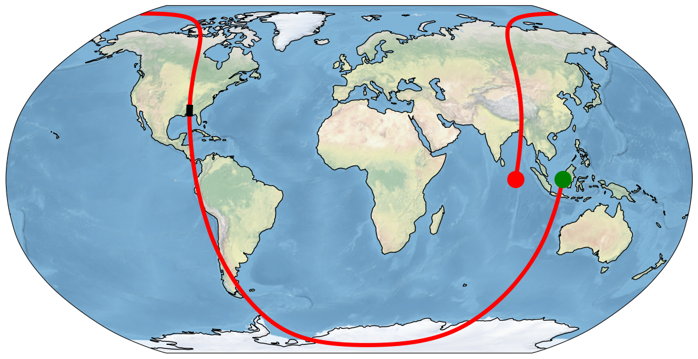
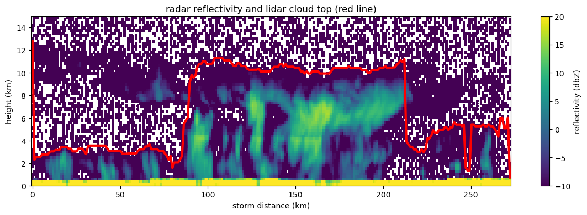

Reading cloudsat data#
This notebook demonstrates how to read the radar reflectivity (GEOPROF-GRAΝULE) and the lidar layer top (GEOPROF-LIDAR-GRANULE) from cloudsat files. We create two plots below: one showing the orbit with the location of a thundercloud, and one showing the reflectivity and cloudtop through the cloud transect.
from matplotlib import pyplot as plt
import numpy as np
import matplotlib.pyplot as plt
from pathlib import Path
from sat_lib.cloudsat import read_cloudsat_var
import a301_lib
in sat_lib init
in a301_lib init
Find the radar and lidar files#
radar_dir = a301_lib.data_share / "pha/cloudsat"
radar_file = list(radar_dir.glob("2008291*2B-GEOPROF_GR*hdf"))[0].resolve()
print(f"{radar_file=}")
lidar_file = list(radar_dir.glob("2008291*2B-GEOPROF-LIDAR*GR*hdf"))[0].resolve()
print(f"{lidar_file=}")
radar_file=PosixPath('/home/phil/shared_files/pha/cloudsat/2008291181813_13156_CS_2B-GEOPROF_GRANULE_P1_R05_E02_F00.hdf')
lidar_file=PosixPath('/home/phil/shared_files/pha/cloudsat/2008291181813_13156_CS_2B-GEOPROF-LIDAR_GRANULE_P2_R05_E02_F00.hdf')
Read the radar reflectivity dataset#
refl_ds = read_cloudsat_var('Radar_Reflectivity',radar_file)
refl_ds
using timestep 0 to set heights
in read_cloudsat_var: reading varname='Radar_Reflectivity'
var_vals.shape=(37082, 125)
replacing missing_value=array(-8888) with np.nan
<xarray.Dataset>
Dimensions: (time: 37082, height: 125)
Coordinates:
* time (time) datetime64[ns] 2008-10-17T18:18:19.863000 ... ...
* height (height) float32 2.501e+04 2.477e+04 ... -4.725e+03
height_km (height) float32 25.01 24.77 24.53 ... -4.485 -4.725
distance_km (time) float64 0.0 1.093 2.187 ... 4.045e+04 4.045e+04
profile_time (time) float64 0.0 0.16 0.32 ... 5.933e+03 5.933e+03
full_heights (time, height) float32 2.501e+04 ... -4.685e+03
Data variables:
latitude (time) float64 -0.004887 -0.01456 ... 0.01802 0.008356
longitude (time) float64 112.0 112.0 112.0 ... 87.27 87.26 87.26
dem_elevation (time) int64 46 44 43 41 41 ... -9999 -9999 -9999 -9999
Radar_Reflectivity (time, height) float32 nan -36.28 nan ... 167.6 167.6
Attributes:
file_type: 2B-GEOPROF
orbit_start_time: 2008-10-17T18:18:19.863000+00:00
orbit_end_time: 2008-10-17T19:57:12.821984+00:00
granule_id: 13156
day: 2008-10-17Get the radar reflectivity (dbZ)#
Note the difference between the height coordinate (1 dimensional, length 125, height bins of the first pulse) and the full heights of all pulses (the variable full height, which has shape (37082,15)
refl_array = refl_ds['Radar_Reflectivity']
dem_elevation = refl_ds['dem_elevation']
distance_km = refl_ds['distance_km']
longitude = refl_ds['longitude']
latitude = refl_ds['latitude']
height = refl_ds.coords['height']
Get the lidar layer top height (highest cloud top, in meters)#
lidar_ds = read_cloudsat_var('LayerTop',lidar_file)
lidar_ds
using timestep 0 to set heights
in read_cloudsat_var: reading varname='LayerTop'
var_vals.shape=(37082, 5)
replacing missing_value=array(-99) with np.nan
<xarray.Dataset>
Dimensions: (time: 37082, height: 125)
Coordinates:
* time (time) datetime64[ns] 2008-10-17T18:18:19.863000 ... 2008-...
* height (height) float32 2.501e+04 2.477e+04 ... -4.725e+03
height_km (height) float32 25.01 24.77 24.53 ... -4.245 -4.485 -4.725
distance_km (time) float64 0.0 1.093 2.187 ... 4.045e+04 4.045e+04
profile_time (time) float64 0.0 0.16 0.32 ... 5.933e+03 5.933e+03
full_heights (time, height) float32 2.501e+04 2.477e+04 ... -4.685e+03
Data variables:
latitude (time) float64 -0.004887 -0.01456 ... 0.01802 0.008356
longitude (time) float64 112.0 112.0 112.0 112.0 ... 87.27 87.26 87.26
dem_elevation (time) int64 46 44 43 41 41 ... -9999 -9999 -9999 -9999 -9999
LayerTop (time) float32 nan nan nan 1.6e+04 ... 1.9e+03 nan nan nan
Attributes:
file_type: 2B-GEOPROF-LIDAR
orbit_start_time: 2008-10-17T18:18:19.863000+00:00
orbit_end_time: 2008-10-17T19:57:12.821984+00:00
granule_id: 13156
day: 2008-10-17layer_top = lidar_ds['LayerTop']
Plot the orbit, with the location of a thunderstorm#
import cartopy.crs as ccrs
start=21750 #seconds in orbit --this is storm starting point
stop=22000
projection=ccrs.Robinson()
transform = ccrs.Geodetic()
fig, ax = plt.subplots(1,1,figsize=(15,8), subplot_kw = {'projection': projection})
# make the map global rather than have it zoom in to
# the extents of any plotted data
ax.set_global()
ax.stock_img()
ax.coastlines()
ax.plot(longitude,latitude,'r',lw=5,transform = transform);
ax.plot(longitude[0],latitude[0],'go',markersize=20, transform=transform)
ax.plot(longitude[-1],latitude[-1],'ro',markersize=20, transform=transform)
ax.plot(longitude[start:stop],latitude[start:stop],"k-",lw=8,transform=transform);

Plot the radar reflectivity and the cloud top height#
We need to transfrom from Geodetic (lon/lat) to Robinson (the cartopy map projection) each time we plot lon/lat values
from matplotlib.colors import Normalize
from copy import copy
fig, axis1 =plt.subplots(1,1,figsize=(14,4))
meters2km = 1.e-3
storm_distance = distance_km[start:stop]
storm_distance = storm_distance - storm_distance[0]
vmin=-10
vmax=20
pal = copy(plt.get_cmap("viridis"))
pal.set_bad("0.2") # 75% grey for out-of-map cells
pal.set_under("0.75")
pal.set_over("r") # color cells > vmax red
the_norm = Normalize(vmin=vmin, vmax=vmax, clip=False)
im=axis1.pcolor(storm_distance,height*meters2km,refl_array[start:stop,:].T,
norm=the_norm)
axis1.set_xlabel('storm distance (km)')
axis1.set_ylim([0,15])
axis1.set_ylabel('height (km)')
cb=fig.colorbar(im,ax=axis1)
cb.set_label('reflectivity (dbZ)')
axis1.plot(storm_distance,layer_top[start:stop]*meters2km,'r',lw=3)
axis1.set_title("radar reflectivity and lidar cloud top (red line)");
